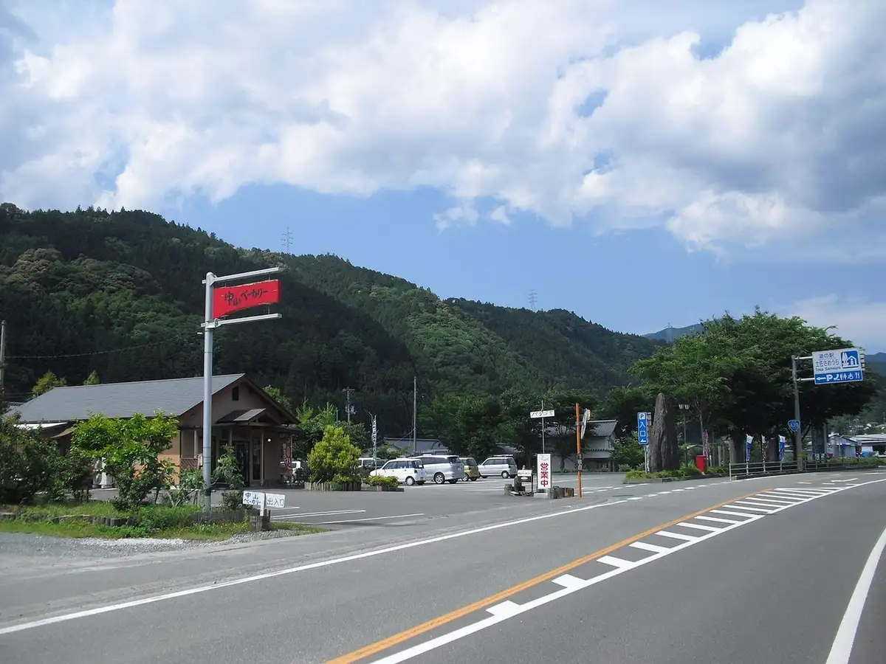
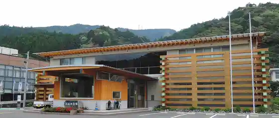
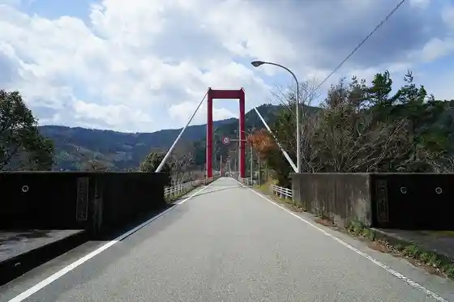
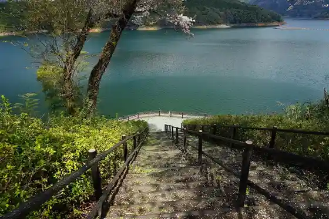
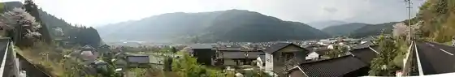

Tosa Town
Tosa Town · Kochi
Tosa Town
Highlighted on the Kochi map.

Stay
Sameura So Reikusaido Hotel
Dining
Yanagi Ya Shokudo
cafe Ka no N
Ramen Tosa Town 439
Tosa Town Sameura BBQ Terasu
Ushi Cho
Iiru Farm no Unagi Ie
Inaka Ryori Yosaku
Omberiiko
Riguru
Sameura So Reikusaido Hotel Resutoran
Experience
Sameura Mizumi Reikusappu Experience
Sights
Roadside Station Tosa Town Sameura
Tosa Town Town Hall

Jokichi Nogawa Hashi

Tai

Tsuchii no Pa no Rama

Setogawa Gorge
Inamura Yama Tozanguchi